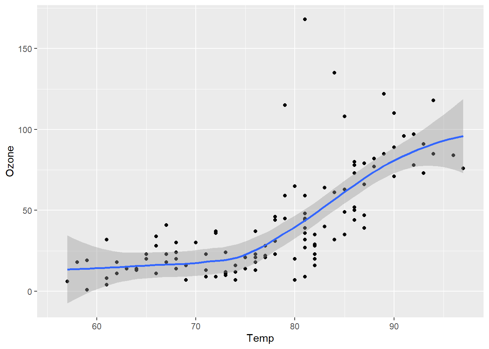

Basics of R Programming Language
Writing Your First Script
- You can either write a code directly into the console or you can use a script.
- Using a script is more efficient. Because it is easier to write modify and save a R Code in a script.
- Open a script with File \(\rightarrow\) New File \(\rightarrow\) R Script or you can use shortcut Ctrl + Shift + N
Objects
- R works by creating objects and using various functions calls that create and use these objects. For example;
- Vectors of numbers, logical values (TRUE and FALSE), character strings and even complex numbers.
- Matrices and general n-way arrays
- Lists - arbitrary collections of objects of any type; e.g. list of vectors, list of matrices, etc.
- Data frames - a general data set type
- functions (yes even functions are objects)
Defining Variables in R
- You can either use a
=or<-operators to define a variable in R. Though both of them are fine,<-is a more common approach while using R.
Exercise 1
- Create a variable
xand assign value5. - Create another variable
yand assign value8. - Create a third variable
zand assign sum ofxandy. - Finally print the value
zto the console.
x = 5
y <- 8
z <- x+y
z
x = 5
y <- 8
z <- x+y
zExercise 2
- Create a variable
xand assign value5. - Create another variable
yand assign value8. - Create a third variable
zand assign sum ofxandy. - Finally print the value
zto the console.
x = 5
y <- 8
z <- x+y
z
x = 5
y <- 8
z <- x+y
z
Note 1: Using print vs not using print
You do not have to wrap an object with print() function in R. Both z and print(z) would give the same output in R.
One case that you would prefer to use print() function is inside the loops (for(), if(), while() etc.).
Without a print() function the objects inside a loop won’t be printed at the console.
Exercise 3
Code
